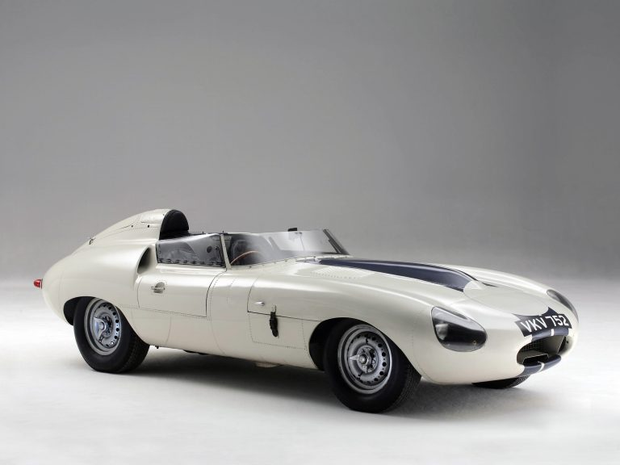
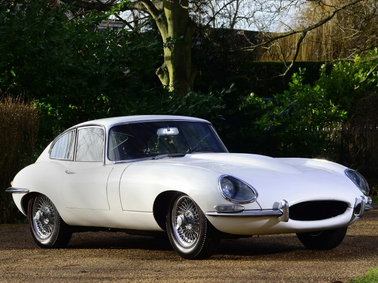
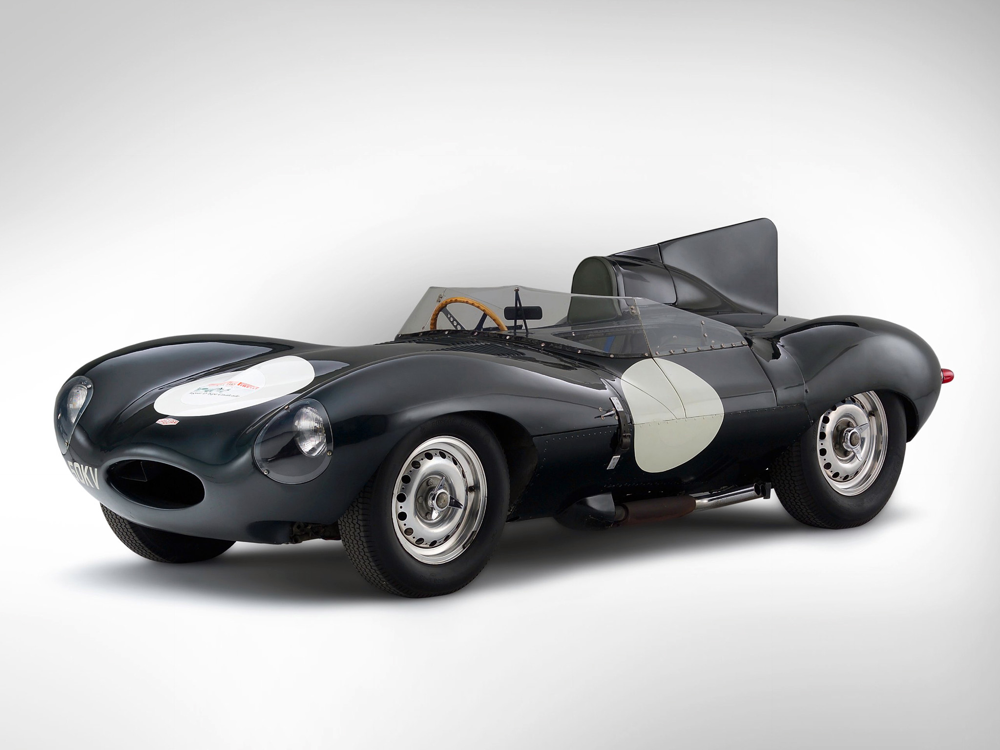

Современные скоростные спортивные купе стоят немалых денег. Оно и понятно: в них применены самые современные технологии, а они не бывают дешевыми. Но так было далеко не всегда, иногда демократичная цена делала спортивную модель массовой и по-настоящему культовой. Яркий пример тому – легендарный Jaguar E-Type. Он поднял британскую марку на новый уровень, а элегантный стиль и доступность сделали его настоящим символом 60-х годов.

Jaguar E2A 1960
История Е-Туре началась в конце 50-х годов. Они были звездным часом Jaguar. Заводская команда одерживала одну за другой победы в самых престижных соревнованиях. На ее счету – целых пять побед в 24-часовой гонке в Ле-Мане за семь лет (в 1951, 1953 и 1955-1957 годах) и множество триумфов в других Гран-при. Такие успехи помогли фирме заработать себе имя и положительно сказались на продажах серийных моделей – купе и кабриолетов Jaguar XK, спортивных седанов Mark 2 и Mark IX. К тому же, дорожные Jaguar получали технические новинки гоночных собратьев: так, с 1957 года серия XK оснащалась дисковые тормоза всех колес – изобретение британской марки. Однако, конструкция XK постепенно начала устаревать, ведь разрабатывали ее еще в середине 40-х годов. И на предприятии в Ковентри приступили к разработке новинки.

Jaguar E-Type 1961
За основу взяли гоночный Jaguar D-Type, записавший на свой счет три победы в Ле-Мане. Разработчики решили, что серийная модель сохранит главную его особенность – несущий кузов типа монокок, который обеспечивает высокую прочность и малый вес конструкции. D-Type стал донором и рядной «шестерки», но вместо сложного впрыска топлива установили три сдвоенных карбюратора. Над дизайнером работал известный авиаконструктор сэр Малколм Сэйр. Он руководствовался соображениями аэродинамики, но при этом его творение получилось и очень красивым. Автомобиль решили назвать E-Type, чтобы подчеркнуть преемственность поколений с D-Type. В 1960 году увидел мир первый прототип Е1А с кузовом из легкого алюминиевого сплава, а вскоре подготовили и стальной концепт Е2А. На протяжении несколько месяцев два автомобили проходили тщательное тестирование.
